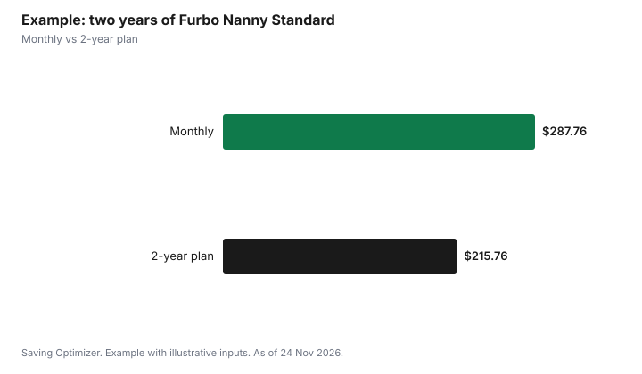

Pets · Canada
Pet Cameras and Gadgets: What's Worth Buying

A pet camera can be worth it if your pet is anxious or you're gone long days, but watch the subscription. Furbo's Nanny plan costs $11.99 to $14.99 a month. Live video, two-way talk, treat tossing and bark alerts work without it. Pay only if you need recorded history or smart alerts.
Key takeaways
- Furbo Nanny Standard: $11.99 a month, or $8.99 a month on a 2-year plan (checked 24 Nov 2026).
- Premium: $14.99 a month monthly.
- Live view, two-way audio, treat tossing and bark alerts work free.
- The plan mainly adds cloud video history and smart alerts.
- Use a strong password and two-factor sign-in.
Subscription costs
| Plan | Monthly | Yearly (per month) | 2 years (per month) |
|---|---|---|---|
| Standard | $11.99 | $9.58 | $8.99 |
| Premium | $14.99 | $11.99 | $11.24 |
Which gadgets are worth it
- A camera for anxious pets or long workdays.
- A microchip pet door if you have a cat flap problem.
- An automatic feeder for set mealtimes.
- Skip GPS trackers with monthly fees unless your pet escapes.
- Skip gadgets that need a plan for basic features.

Two years of a plan: an example
Example: Standard monthly for two years costs $287.76. On a 2-year plan it's $215.76. Without a plan, it's $0 after the camera.
See smart home subscriptions and privacy and dog daycare vs a walker.
Sources
- Furbo Help Center, Furbo Nanny plans and pricing, checked 24 Nov 2026.
- Happy Pet Lab, Furbo Nanny subscription cost (Canada) (17 Nov 2026), checked 24 Nov 2026.
Frequently asked questions
Do I need Furbo Nanny?
Not for live view, two-way audio, treat tossing or bark alerts.
How much is Furbo Nanny in Canada?
Standard is $11.99 a month monthly; Premium is $14.99.
What does the plan add?
Cloud video history and smart alerts.
Are pet cameras a privacy risk?
They can be. Use a strong password, two-factor sign-in and turn them off when home.
Which pet gadgets are worth buying?
Ones that solve a real problem without needing a monthly plan.
Researched and drafted with AI assistance and fact-checked against official Canadian sources. How we create content.
Note: Prices change. Education only.